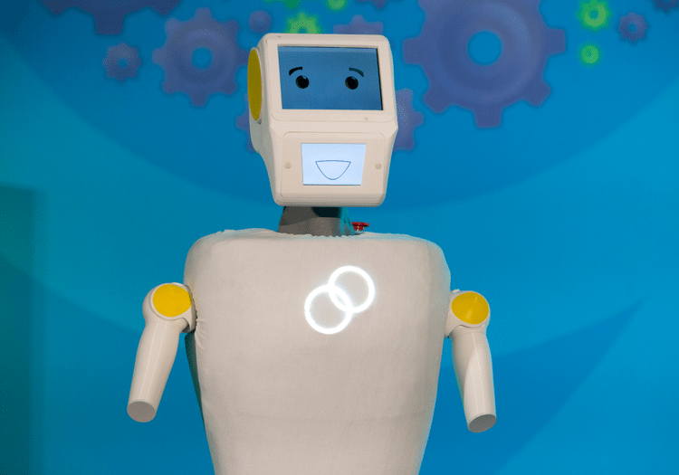

Stevie
A new kind of care robot
Stevie is a social care robot. He is designed to address many of the problems faced in care facilities, he will help carers deliver a high quality of care to residents. Stevie can perform simple tasks like anomaly detection, object delivery, guidance, security patrols, entertainment and providing information. However, since he is not a fully autonomous robot, Stevie can also facilitate tele-presence and connect residents to skilled carers remotely. In this way Stevie can perform high value activties such as routine bed checking, first response and medication reminders.
How it works
Stevie is provided as a service, you don't need to set up, maintain or manage anything. He can simply be placed in your care home and we will take care of everything else.
Stevie learns the layout of the building, people's faces and names, and searches for regular patterns in behaviours. He can also call for the help of tele-operators when he is unsure, in that way you don't have to train him yourself.
Stevie is designed to work alonside Smart Sense
Intelligence
What can Stevie do?
Autonomous
- Self charging
- Learning faces and places
- Deliver objects
- Perform security patrols
- Guide people around
- Provide information
Entertainment
- Play music
- Skype
- Dance therapy
- Conversate
- Answer questions
- Help organise your lives
Care
- Routine bed checks
- Detect anomalies
- Medication reminders
- Response to alerts
- Support carers
- Socially engage
Improve
We believe that robotics has the potential to massively transform the care industry and help deliver a high quality of care to those who need it most.
- Reduces disruption to residents.
- Improves the transparency.
- Guarantees reliability of service provision.
- Frees time for care workers to focus on high value activities.
- Increases awareness of environmental factors.
- Reduces cost.